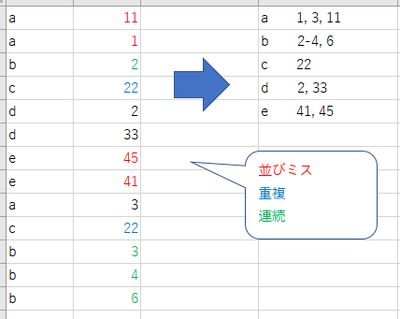
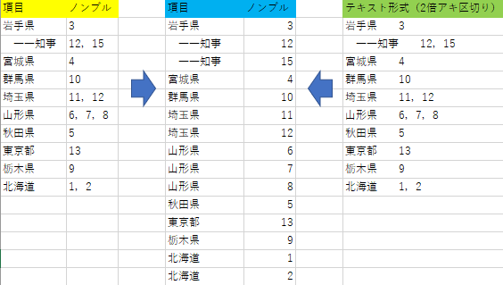

索引作成補助ツール
新規作成用ツール
索引拾いのテンプレート生成
SAMPLE1

SAMPLE2

- 索引拾いのための Excel テンプレートを作成します。
- 各ページの項目数を上図 SAMPLE1 のように Excel に整理して下記ボックスに貼り付けてください。
- “index” 列に条件付き書式で「偶数の場合に背景色変更」という設定をするとページの変わり目が見やすくなり便利です（SAMPLE2）。
| ID | index | ページ | 項目 |
読みがなの取得
配列読みに変換
テキストボックスに入力された文字列を配列読みに変換します。
カタカナひらがな相互変換
テキストボックスに入力された文字列をカタカナ／ひらがなに変換します。
名寄せ
- ノンブルを昇順で名寄せします。重複を整理し、3以上連続するノンブルをハイフンでつなぎます。
- ノンブルに半角数字以外が含まれている場合、「ソート」「重複整理」「ハイフンつなぎ」のいずれも行われません。
- 項目列ではソートしません。
- 見よ項目など、ノンブルが記入されていない場合はそのまま表示します。
SAMPLE

子項目候補の確認
- 名寄せ済みの索引に対して子項目の候補を探します。
- 機械的な検索なので必ず目でも確認してください。
ノンブル並びの確認
- チェック内容：
- ノンブルが正しく並んでいないもの
- 3つ連続しているもの
- カンマの全角半角は区別しません。
- ノンブルに半角数字以外が含まれている場合は正しく判定できません。
- 機械的な検索なので必ず目でも確認してください。
見よ項目の確認
- チェック内容：
- 見よ項目があるのに参照先に括弧で付記されていないもの
- 参照元として括弧書きされているのに見よ項目がないもの
- 機械的な検索なので必ず目でも確認してください。
ノンブル加算減算
- 名寄せされた索引に対して、指定範囲でノンブルを増やしたり減らしたりします。
- ノンブルに数字以外が含まれていた場合は計算の対象外です。
- 範囲を示すハイフンなどが含まれる場合もスキップします。
必ず目でも再確認してください。
旧版再利用ツール
子項目の復元
SAMPLE
- 索引項目中の子項目を復元します（上図）。
- ノンブルが入っていても動作します。
- 改訂時に旧版の索引を再利用する際などにご利用ください。
名開き
SAMPLE

- 名寄せされた状態の索引を「項目－ノンブル」の1対1対応に戻します（上図）。
- 子項目や見よ項目はそのまま残ります。
- 改訂時に旧版の索引を再利用する際などにご利用ください。
- 項目とノンブル間が2倍アキで区切られた、テキスト形式の索引でも動作します。
- タブ文字（Excel）もしくは2倍アキで項目とノンブルを区別しています。
「日 本」などと字間に2つ以上スペースが含まれていると正常に動作しませんのでご注意ください。
| 項目 | ノンブル |